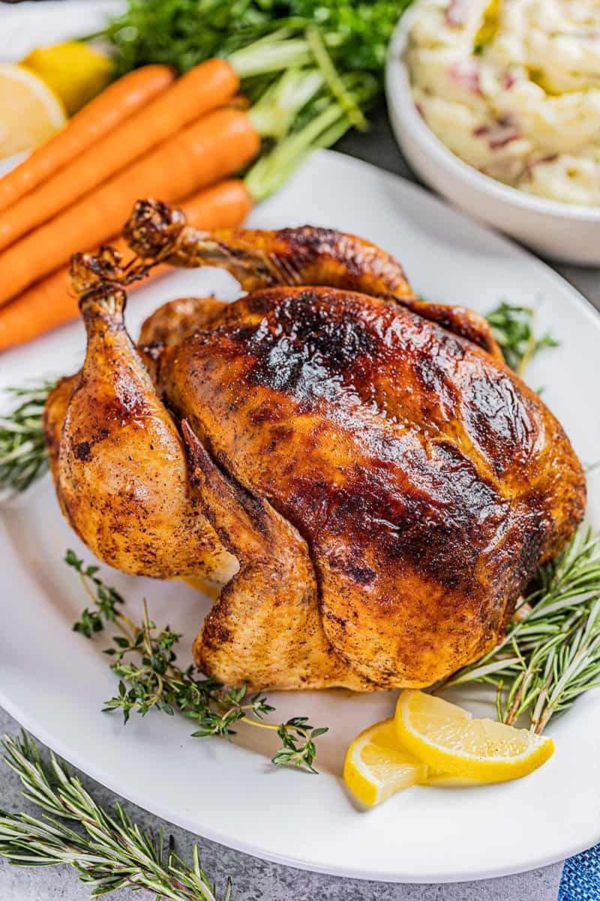

Roast Chicken

Ingredients
- 1 whole fryer chicken
- 1/2 teaspoons salt
- 1 teaspoon dried basil
- 1 teaspoon dried oregano
- 1 teaspoon paprika
- 1/4 cup softened salted butter
- 1 large lemon
- 2 sprigs fresh rosemary
Directions
- Remove chicken from packaging and pat dry using paper towels.
- In a small bowl, stir together salt, basil, oregano, and paprika.
- In another small bowl, use a fork to mash softened butter together with 2 teaspoons of the seasoning mixture.
- Loosen up the skin on the chicken. Wiggle your fingers in and slide them all around to loosen that skin right up. Place butter mixture underneath skin.
- Cut the lemon in half and squeeze the juices directly over the chicken skin.
- Sprinkle remaining seasoning mixture over the skin to coat.
- Place the lemon halves and rosemary sprigs inside the cavity of the chicken.
- Place chicken breast side up in a roasting pan. Roast for 20 minutes at 450 degrees, then reduce the temperature to 350 degrees and continue roasting for about another 40 minutes.
- Remove from the oven when the internal temperature reaches 165 degrees. Use a meat thermometer to check right where the leg connects to the body. Let it rest for about 20 minutes before carving.
Back